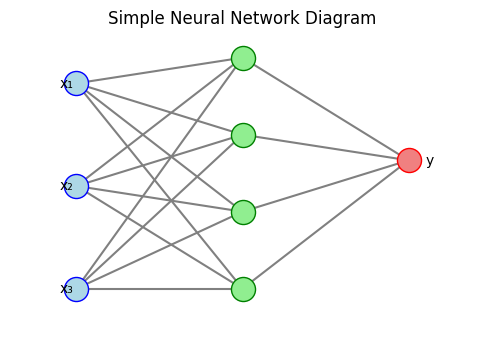

ニューラルネットワーク入門
ニューラルネットワークは、生物の脳の神経回路を模した計算モデルで、入力から出力までの複数の層で構成されます。各層には複数のノード（ニューロン）があり、それらが重み付き結合によって接続されています。こうした仕組みにより、複雑なパターンを表現することができます。
基本構造
一般的なニューラルネットワークは入力層、1 つ以上の隠れ層、出力層からなります。各層のニューロンは前層の出力を受け取り、線形変換と活性化関数によって処理します。このように全体として入出力を結び付ける複雑な関数として捉えられます。
隠れ層が多層にわたる場合を特にディープニューラルネットワークと呼び、深層学習（ディープラーニング）の基盤となっています。
- 入力層: データをネットワークに取り込む層。ニューロンの数は特徴量の数に対応します。
- 隠れ層: 中間処理を行う層。複数層を重ねることで複雑な表現を学習できます。
- 出力層: 問題に応じた結果を出力する層。分類ならクラス数、回帰なら連続値を出力します。

学習の仕組み
ニューラルネットワークの学習は、与えられた入力データと正解ラベルから損失関数を計算し、その値を最小にするように重みを調整するプロセスです。
学習の流れ
- 入力データをネットワークに通し、出力を得る。
- 出力と正解ラベルから損失関数を計算する。
- 誤差逆伝播法（バックプロパゲーション）で損失の勾配を各重みに伝播し、勾配に基づいて重みを更新する。
- 上記をデータセット全体に対して繰り返し、損失が減少するように学習する。
浅層ネットワークと深層ネットワーク
| 種類 | 特徴 |
|---|---|
| 浅層ネットワーク | 隠れ層が1層のみ。シンプルな問題を扱うのに適している。 |
| 深層ネットワーク | 隠れ層が多数あり、高度な表現学習が可能。 |